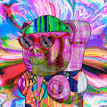 LSD GUMMY BEARS 10K 关于🅶🆄🅼🅼🆈🐻🅻🆂🅳 NFT 艺术家 我是一个 35 岁的人，他辞去了 14 年的造船厂工作，回到了从我的诗歌中创作数字艺术、动画、人工智能音乐和人工智能音乐视
Lucid Dreamers V1 过去 7 天内未售出 Lucid Dreamers V1。 使用我们的自定义 AI 随机生成 2222 名清醒梦者。罗纳尔多·德菲奇创作的艺术品。5/26 揭晓 ▶ 什么是 Lucid Dreamers V1？ Lucid Dreamers V1 是一个 N
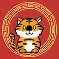 Luckies Luckies 通过我们在 OddFutur3 和全球知名艺术家 Sophia Chang 之间设计的数字红包 🧧 作为 NFT 来庆祝亚洲文化。 以太坊区块链上使用 ERC-1155 标准的 8,888 个独特的 NFT。100% 手绘生肖字符
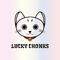 Lucky Chonks Official Lucky Chonks 是独特的 Chonks NFT 的集合——生活在元宇宙中的独特数字收藏品。拥有它们会带来好运和财富！ 限量版 Lucky Chonks，每个 chonk 都是 100% 独一无二的，拥有它们会
Lucky Crypto Piggy Lucky Crypto Piggy NFT 在过去 7 天内售出 9 次。Lucky Crypto Piggy 的总销售额为 57.68 美元。一个 Lucky Crypto Piggy NFT 的平均价格为 6.4 美元。有 4,285 名 Lucky Crypto Piggy 拥有者，总共拥有 4,298 个代币。 嘿嘿嘿
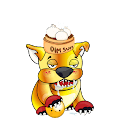 Lucky Foo Dogs NFT Lucky Foo Dogs 旨在为您带来好运和好运。因此，Foo Dogs 永远不会要钱。他们只是在寻找有爱心的主人。免费薄荷。 将精神 Foo Dog 作为您在密码宇宙中的监护人存储在您
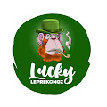 Lucky LepreKongz Lucky LepreKongz 拥有 317 个独特的 Kongz。每个图形均由 Pickle 手工制作。 持有者被授予访问 Hive Alpha 的外部 Hive 的权限。 允许持有者使用 Founders Pass 指导和运营“The Hive”会员
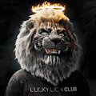 LUCKY LION CLUB GENESIS Lucky Lion Club 是由世界知名艺术家 Joel Best 制作的 4,000 个独特的 8K NFT 集合。通过拥有一只幸运狮，您将可以访问一个由遍布世界各地的高净值人士组成的私人专属社区。我们
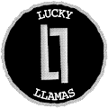 Lucky Llamas NFT Lucky Llamas 是生活在以太坊区块链上的独特 Llama NFT 的集合。您的 Lucky Llama 将授予您 Lucky Llama 俱乐部的会员资格并进入 Lucky Llama Land，在那里，美洲驼可以相互竞争以赢得奖品和 $
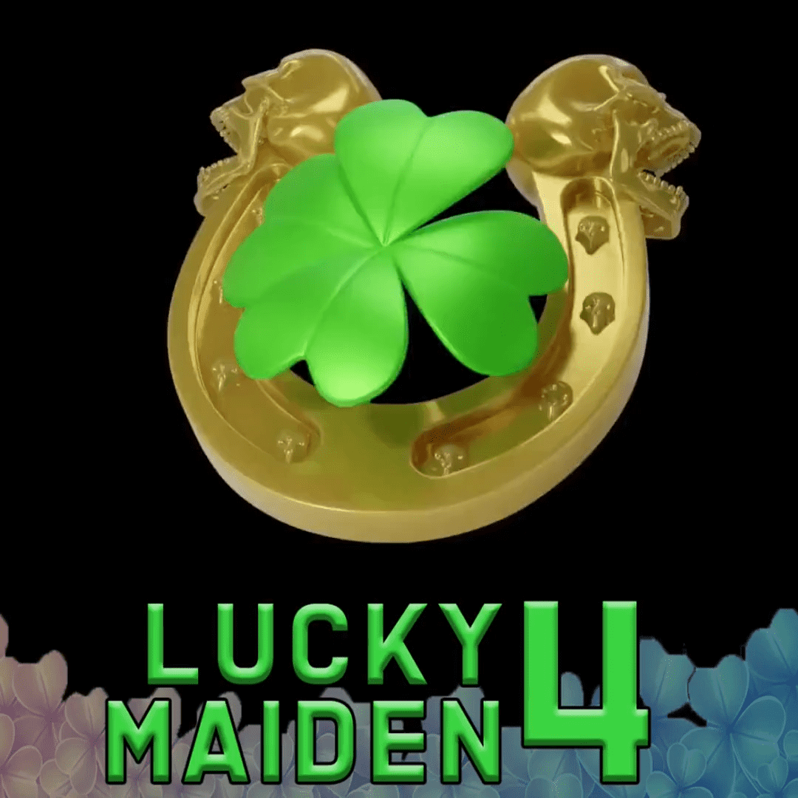 Lucky Maiden 4 Event 这些 NFT 充当您的入场代币，并用于注册 Lucky Maiden。 以下是 Lucky Maiden 3 活动的所有信息 在 Twitter 上关注 @LuckyJackamoto 和 @_ZombieRacing 以关注公告！ ▶ 什么是幸运少女？ Lucky Maiden 是一个 NFT（
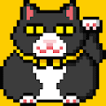 LuckyCat NFT #LuckyCat NFT 给我们带来好运的猫 获得好运 #团队HYSMYC 做一些可爱的东西，做一些很酷的东西，做一些奇怪的东西 我们将继续制作，我们不会停止 让我们一起玩
LuckyCatzNFT 给你的生活带来好运！从宇宙到元界 LuckyCatz 独特且稀有的卡片，用于收集和使用 3 个 DNA 12 个皇室 3 个特殊的 Ryo 使用您的 LuckyCatz 开始您的旅程，并为您的 BabyLuck 获得一张免费的
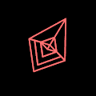 Ludo Labs Genesis Collection Ludo Labs 是一个基于会员制的数字足球社区，利用 NFT 的力量为球迷提供独家体验，并以民主化的方式进入足球核心圈。 通过拥有我们的 NFT，收藏家成为全球志同
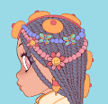 Lulala girl 卢拉拉女孩统计 过去 7 天没有售出卢拉拉女孩。 777个lulala女孩从海上旅行，来拜访你。所以记得保护他们。中午揭晓。 Lulala girl NFT - 常见问题 ▶ 什么是
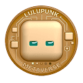 Lulupunk LuluPunk 是一组独特的虚拟形象艺术品。目前有9999个。LuluPunk 由算法生成，将成为虚拟世界、游戏和 VR 的 3D 化身。您的 LuluPunk 兼作您的 LuluPunk 俱乐部会员卡。
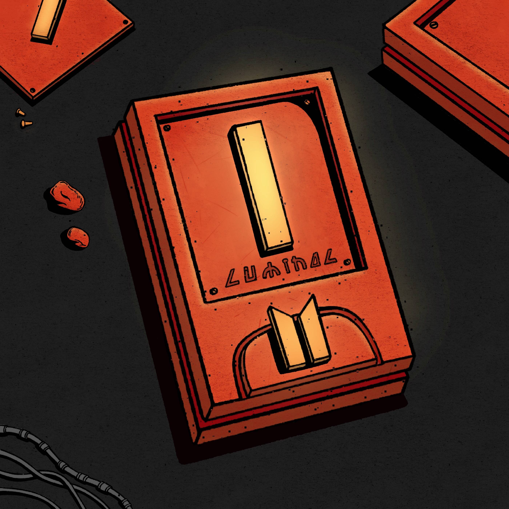 Luminal Credits 我们正在建立一个宇宙；光之宇宙。以太坊区块链上的 NFT 项目，汇集了丰富的科幻小说、精美的艺术品和令人难以置信的社区精神。Luminal Genesis 是由知名
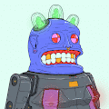 Lump Rapture Lumps World 是以太坊区块链上仅有的 500 个独特的 Lump NFT 的集合。每个资产都是手绘的，每个块都是随机生成的，具有独特的组合。 在浩瀚的时空深处的某个地方，500
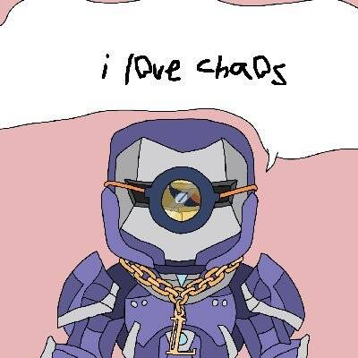 Lunatic Support Group (LSG) Lunatic Support Group (LSG) 是一个由 3,333 个 NFT 组成的集合，旨在将看到他们的储蓄因 TerraUSD/LUNA 崩盘而被剥夺的社区聚集在一起。 ▶ 什么是疯人支持小组 (LSG)？ Lunatic Support Group (LSG) 是一个 NFT
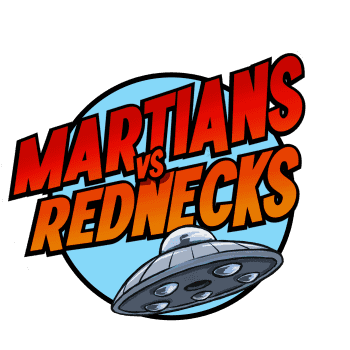 Martians vs Rednecks Weapons 6,667 个 NFT 在 2022 年 3 月售罄。地球之战现已开始！了解最大的失败者故事是如何展开的。在被绑架并被带到太空进行“实验研究”数十年后，现在是红脖子反击的时
Meta Jacket NFT Official META JACKET NFT 是由艺术家和时装设计师 Sheycha 设计的 888 件夹克的集合。Meta Jacket NFT 的持有者有机会将他们的 NFT 变成真正的 Jacket，并从永久销售中获得版税。 多年
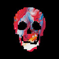 Meta Skeletons 2D 什么是Meta Skeletons 2D？ Meta Skeletons 2D元骨架是5，555个独特的2D / 3D NFT社交化身骨架，准备接管元宇宙并分割战利品。 每个骨架都是独一无二的，具有
MetaCityM House 随心所欲地改变你的房子的外观，开始你的元宇宙生活！ MetaCityM House NFT - 常见问题（FAQ） ▶ 什么是 MetaCityM 房屋？ MetaCityM House 是一个 NFT（非同质代币）集合。存储在区块链
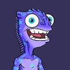 METACITZNE METACITZN 是一个以社区为重点的衍生 NFT 集合，包含 9,999 个稀有 Nft。每个 NFT 都是使用 140 多种属性（如帽子、眼睛、皮肤等等）的组合通过算法生成的！METACIT
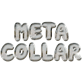 MetaCollar Official MetaCollar Official 是一系列独特的 Collar NFT——专注于工人阶级。您的 Collar NFT 作为您的会员专用通行证进入我们的下一代综合学习平台：CollarLearn。 我们的收藏
MetacraftSkin: Crypto Constellations 这套皮肤的灵感来自 12 星座和加密社区的日常生活。它由 Metacraft 和 Showme 共同出版。穿上它，在 Metacraft 中与众不同。 MetacraftSkin：加密星座 NFT - 常见问题（
METActivists-Genesis METActivists 是一群在区块链上跑来跑去的有趣而多彩的人。这里有 274 位希望将激进主义带入 Web3.0 的活动家。有些人向世界传达了信息，有些人在他们的星座中取笑。但他们
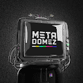 METADOMEZ OFFICIAL METADOMEZ 是一个由 8,888 名人工智能组成的精英组织，他们已进入元界，并已成为人类与技术之间的终极桥梁。 METADOMEZ 官方 NFT - 常见问题 (FAQ) ▶ 什么是 METADOMEZ 官方？ METADOMEZ OFFICIAL 是一个 NFT
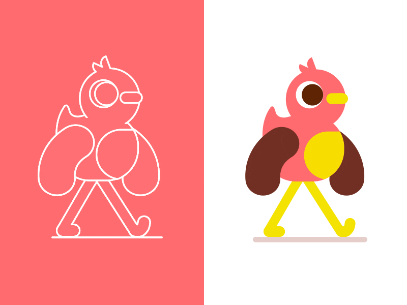 metaduckswtf 6,666 个 MetaDuck 被释放到 META 世界。免费薄荷，没有公共路线图，趁他们还在这里的时候抓住一些。 metaduckswtf NFT - 常见问题（FAQ） ▶ 什么是 metaduckswtf？ metaduckswtf 是
Metafrense Metafrens 官方 NFT - 常见问题（FAQ） ▶ 什么是 Metafrens 官方？ Metafrens Official 是一个 NFT (Non-fungible token) 集合。存储在区块链上的数字艺术品集合。 ▶ Metafrens 官方代币有多少？ Metafrens 官方 NFT 总共有 499 个。目
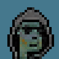 metaGAN - Series 1 - Zombie Punks 原始朋克的僵尸幸存者，88 只 OG 僵尸的侵扰升级为全面的僵尸启示录。 经过数周对数千个源图像的迭代 GAN 训练后制造的机器。独特的僵尸朋克在被放大之前在
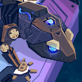 MetaGeckos Genesis MetaGeckos Genesis NFT - 常见问题（FAQ） ▶ 什么是 MetaGeckos Genesis？ MetaGeckos Genesis 是一个 NFT（不可替代令牌）集合。存储在区块链上的数字艺术品集合。 ▶ 存在多少 MetaGeckos Genesis 代币
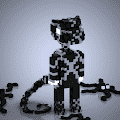 Metageckos Official Metageckos 官方 NFT - 常见问题（FAQ） ▶ 什么是 Metageckos 官方？ Metageckos Official 是一个 NFT（非同质代币）集合。存储在区块链上的数字艺术品集合。 ▶ 存在多少 Metageckos 官方代币？ 总共有
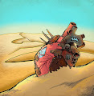 METAGIRL - The Digital Heart Collection By Sammy Arriaga Sammy Arriaga NFT 的 METAGIRL - 常见问题（FAQ） ▶ Sammy Arriaga 的 METAGIRL 是什么？ Sammy Arriaga 的 METAGIRL 是一个 NFT（不可替代令牌）集合。存储在区块链上的数字艺术品集合。 ▶ Sammy Arriaga 代币有多少 M
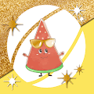 Metagri-Labo Collection Metagri 实验室是用区块链为可持续农业做出贡献的“农业 DAO”。“Labo”这个名字旨在进行新的社会实验，而不用担心失败。“Metagri Labo Coll
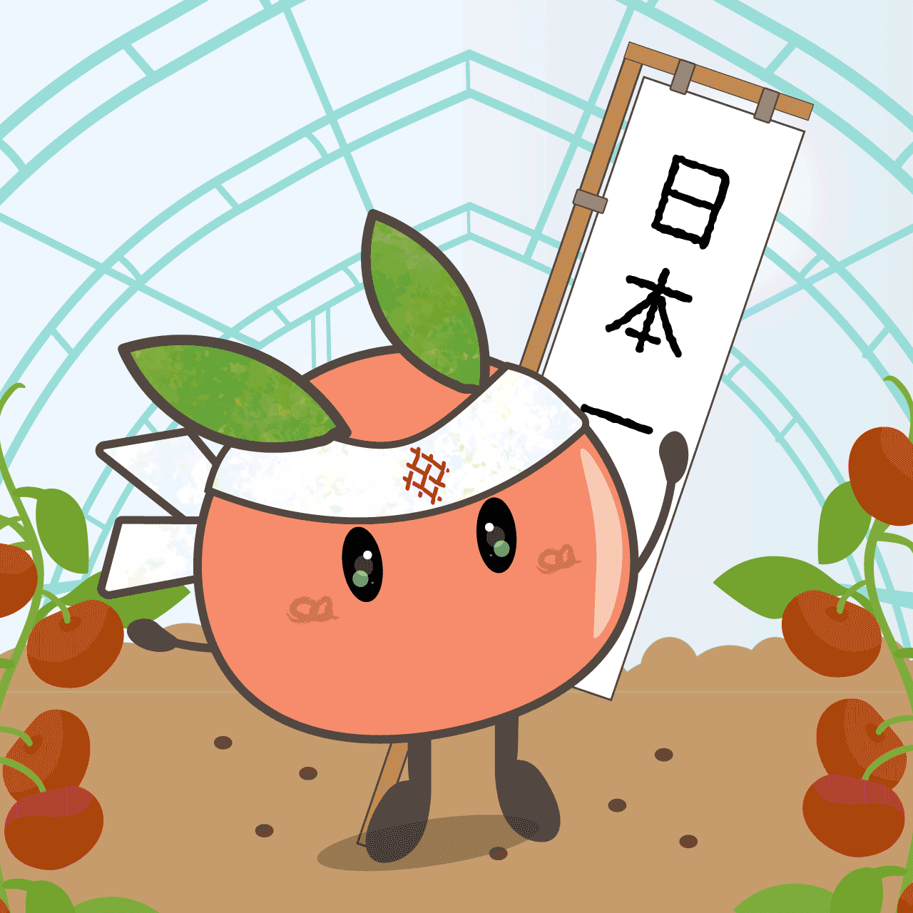 Metagri-Labo Tomato Collection Metagri-Labo Collection NFT - 常见问题（FAQ） ▶ 什么是 Metagri-Labo 系列？ Metagri-Labo Collection 是一个 NFT (Non-fungible token) 集合。存储在区块链上的数字艺术品集合。 ▶ 有多少 Metagri-Labo Collection 代币？ 总共有 40 个 Metagri-Labo Collection NFT。目前
Metaguardians: Sidekicks Metavillains 是 10,000 个独特的 3D 反派化身的集合，作为 NFT 在区块链上生活。恶棍在以太坊区块链上存储为 ERC721 代币。 恶棍不仅是设计的人物收藏品，它们还可以作为您进入独家
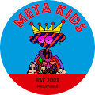 MetaKids NFT MetaKids NFT 统计 创建于 6 个月前 5,000 代币供应 5% 费用 过去 7 天没有出售 MetaKids NFT。过去 30 天最畅销的 MetaKids NFT NFT MetaKids NFT 特征 眼睛 红色：1.7% 蓝色：0.6% 爱：0.3% 粉
MetaKongz Official Collection METAKONGZ是 9 999 个 METAVERSE KONGZ NFT 的集合。 METAKONGZ 是独特的数字收藏品，作为 ERC-721 代币存储在以太坊区块链上并托管在 IPFS 上。 METAKONGS 也是一个 Mega DAO，它购买和分割 C